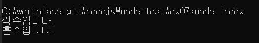

// var.js 파일
const odd = '홀수입니다.';
const even = '짝수입니다.';
module.exports = {
odd,
even,
};
위 파일을 아래 소스로 수정합니다.
// var.js 파일
exports.odd = '홀수입니다.';
exports.even = '짝수입니다.';

module.exports로 한 번에 대입하는 대신, 각각의 변수를 exports 객체에 하나씩 넣었습니다.
# Warning : exports 객체 사용 시
exports 객체 사용 시에는 module.exports와의 참조 관계가 깨지지 않도록 주의해야 합니다.
module.exports에는 어떤 값이든 대입해도 되지만, exports에는 반드시 객체처럼 속성명과 속성값을 대입해야 합니다.
exports에 다른 값을 대입하면 객체의 참조 관계가 끊겨 더 이상 모듈로 기능하지 않습니다.
exports를 사용할 때는 객체만 사용할 수 있으므로 func.js와 같이 module.exports에 함수를 대입한 경우에는 exports로 바꿀 수 없습니다.
exports와 module.exports에는 참조 관계가 있으므로 한 모듈에 exports 객체와 module.exports를 동시에 사용하지 않는 것이 좋습니다.
// func.js 파일
const { odd, even } = require('./var');
function checkOddOrEven(num) {
if (num % 2) { // 홀수면
return odd;
}
return even;
}
module.exports = checkOddOrEven;